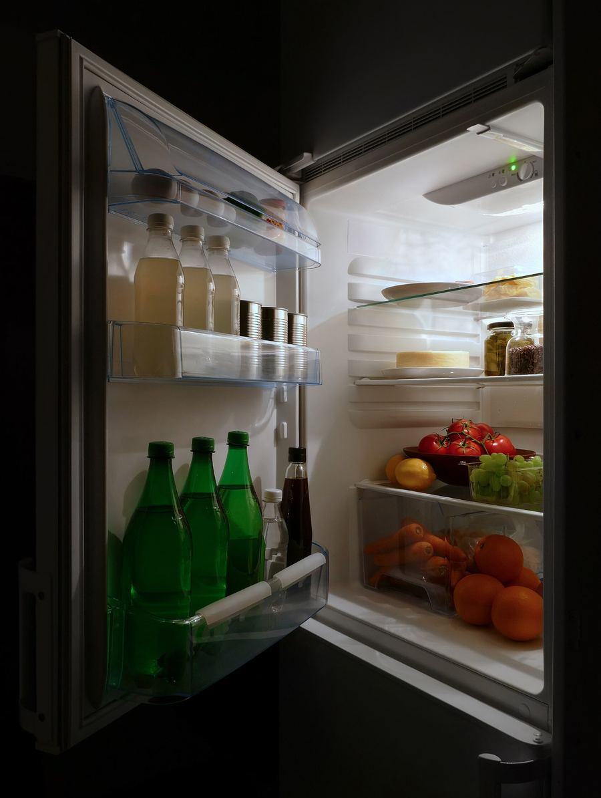
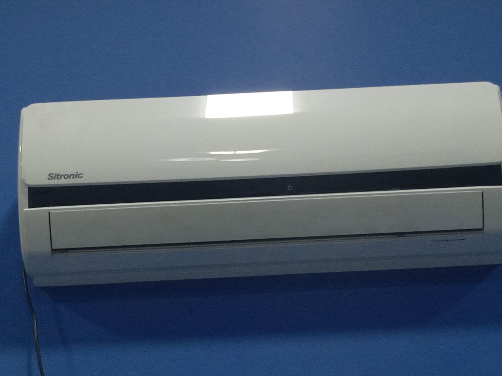
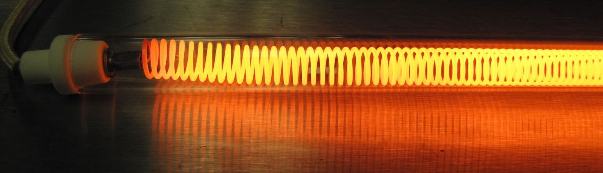
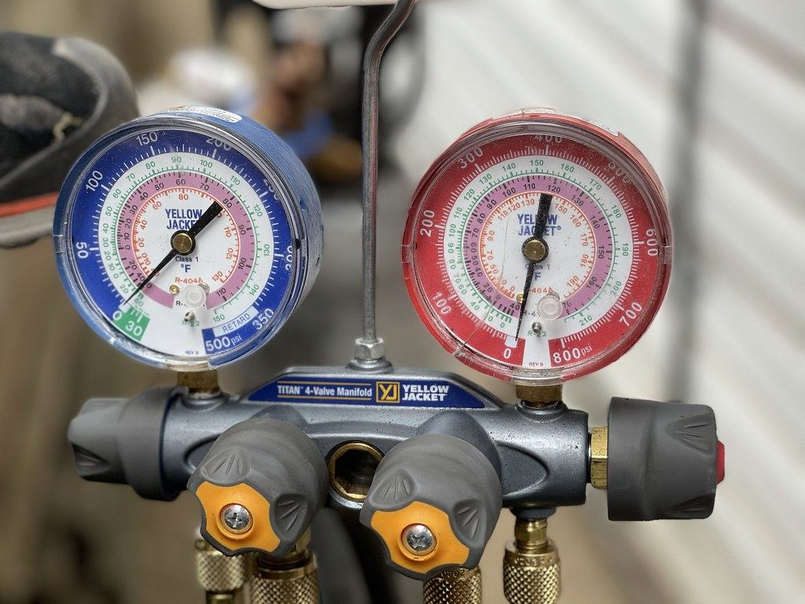
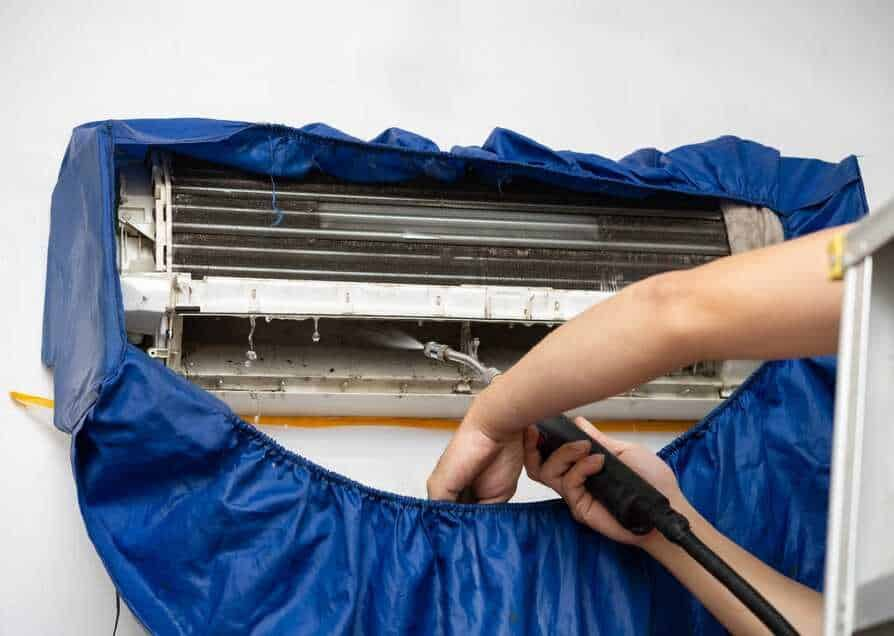
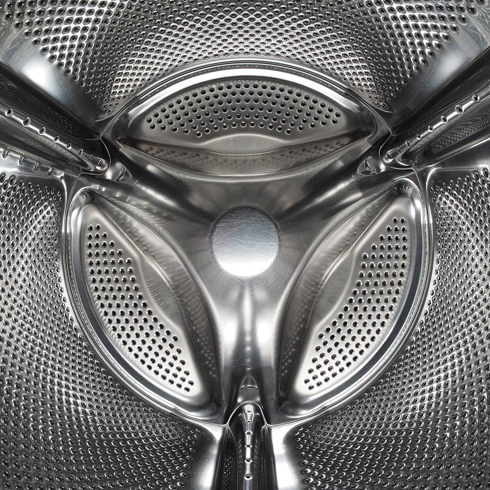
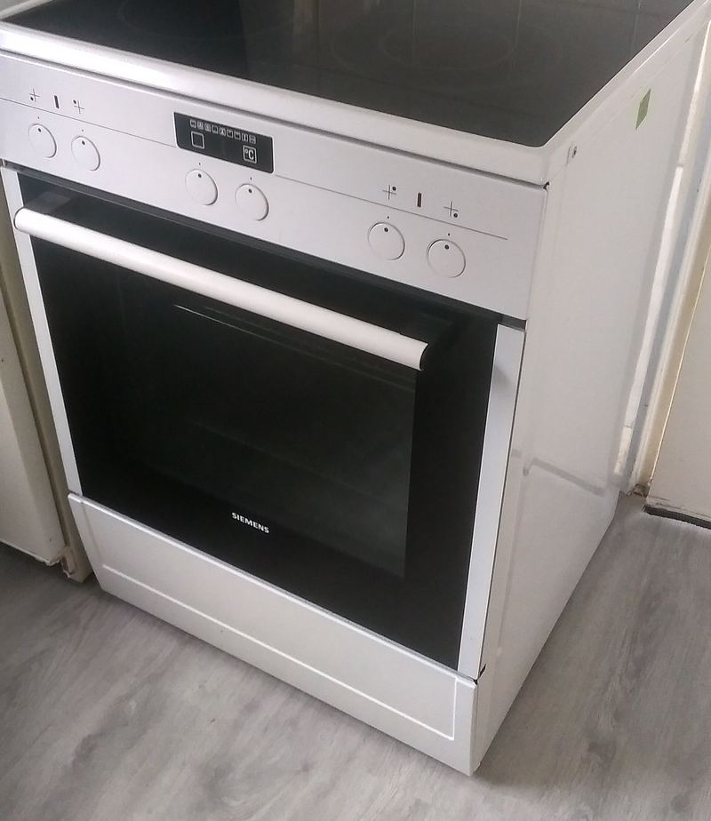
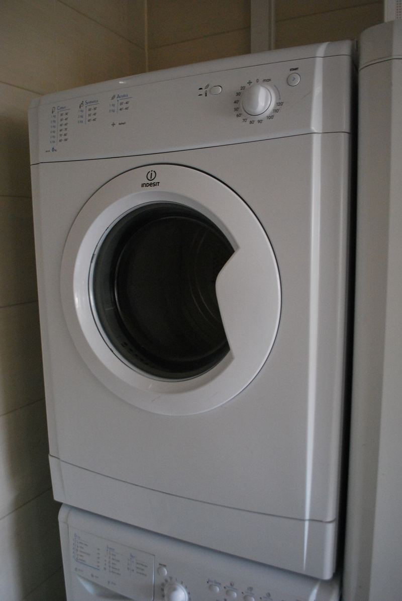
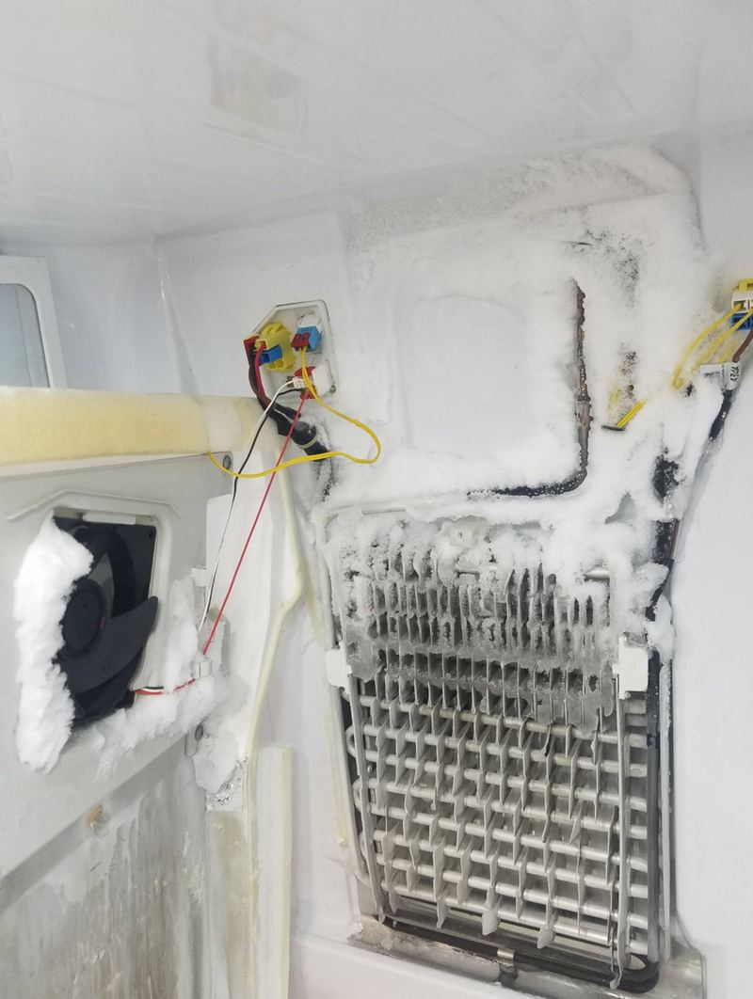

מקררים ומקפיאיםFridges & freezers
מקררFridge
מקפיאFreezer
טמפרטורות מקובלות · תמונה להמחשהTypical settings · illustrative photo
קונספט לדוגמה שנבנה עבור פניקס שירות ותיקון · זה אינו האתר הרשמי של העסקA sample concept built for Fenix Service & Repair · This is not the business’s official website


פניקס שירות ותיקון, קריית ים: מזגנים, מקררים, מכונות ומייבשי כביסה ותנורים, בקריות, בחיפה, בעכו ובנהריה.Fenix Service & Repair, Kiryat Yam: air conditioners, fridges, washing machines, dryers and ovens, across the Krayot, Haifa, Acre and Nahariya.
מזגנים, מקררים ומקפיאים, וגם ניקוי מזגנים.Air conditioners, fridges and freezers, and AC cleaning.

טמפרטורות מקובלות · תמונה להמחשהTypical settings · illustrative photo

שעוני הלחץ של טכנאי הקירור.A cooling technician’s pressure gauges.

חדרי שינה, סלון ומיני מרכזי.Bedroom, living-room and mini-central units.
התמונה מהאתר של פניקסPhoto from the Fenix website
מכונות כביסה ומייבשי כביסה.Washing machines and tumble dryers.
0 סל״דrpm

תנורים ומייבשי כביסה.Ovens and tumble dryers.

גוף חימום, טרמוסטט, מאוורר.Elements, thermostat, fan.

חימום, תוף, חיישנים.Heating, drum, sensors.

הפשרה, חיישנים, גז.Defrost, sensors, refrigerant.
מקריית ים: הקריות, חיפה, עכו ונהריה.From Kiryat Yam: the Krayot, Haifa, Acre and Nahariya.
עובדים על מכשירים שלWorking on appliances by
חמש ביקורות שנכתבו בגוגל.Five reviews written on Google, translated from Hebrew.
״שירות, מקצועיות, אדיבות, יחס סובלני, כל מה שלקוח רוצה ומבקש לעצמו - זה אתם. … הגיע בחור מקסים, מיומן וסובלני בשם סתיו, איתר את הבעיה, הסביר וביקש אישור להמשך טיפול. הבעיה טופלה בצורה מושלמת.״
“Service, professionalism, courtesy, patience, everything a customer wants for himself – that’s you. … A lovely, skilled and patient guy named Stav came, found the problem, explained and asked for approval before going on. The problem was fixed perfectly.”
״טכנאי מזגנים מומלץ בקריות וחיפה!! תיקן לי את המזגן בלי בעיה, בן אדם מדהים.״
“A recommended AC technician in the Krayot and Haifa!! Fixed my air conditioner with no trouble, an amazing person.”
״הגיע הטכנאי לתיקון מקרר שלא קירר למטה אבל המקפיא עבד, קודם כל הוא היה אדיב נעים ונחמד, במספר דקות גילה את התקלה … אמין מאוד.״
“The technician came to fix a fridge that wasn’t cooling below while the freezer worked. First of all he was courteous, pleasant and kind, and found the fault within minutes … very trustworthy.”
״זמינות מיידית ומענה נעים. תיאום הגעה מראש ועבודה נקיה.״
“Immediate availability and a pleasant answer. The visit arranged in advance and clean work.”
״חברה מעולה לתיקון מזגנים ומוצרי חשמל ביתיים, ממליץ בחום.״
“An excellent company for repairing air conditioners and home appliances, warmly recommended.”
בוחרים מכשיר ותקלה, והפתק נכתב לבד.Pick the appliance and the fault, and the note writes itself.
מכשירAppliance
מה קרהWhat happened
אזורArea
תשובות קצרות, מתוך האתר של פניקס.Short answers, from the Fenix website.
מזגנים, מקררים, מכונות כביסה, מייבשי כביסה ותנורים, וגם ניקוי מזגנים.Air conditioners, fridges, washing machines, tumble dryers and ovens, plus AC cleaning.
בקריות, בחיפה, בעכו ובנהריה.The Krayot, Haifa, Acre and Nahariya.
את כל סוגי המזגנים, כולל מזגנים בחדרי שינה, בסלון ומיני מרכזי.All types, including bedroom, living-room and mini-central units.
מזגן מלוכלך מפזר בבית אבק, חיידקים ועובש, ועובד קשה יותר כדי לקרר, ולכן צורך יותר חשמל.A dirty unit spreads dust, bacteria and mould around the home, and works harder to cool, so it uses more electricity.
שעות הפעילות: 24 שעות ביממה, כל ימות השבוע. הטלפון: 04-874-5541.Opening hours: 24 hours a day, every day of the week. Phone: 04-874-5541.
כן. Говорим по-русски.Yes. Говорим по-русски.
בין היתר Bosch, Siemens, Electrolux, Samsung, LG, Miele, AEG, אלקטרה ותדיראן.Among others Bosch, Siemens, Electrolux, Samsung, LG, Miele, AEG, Electra and Tadiran.
פניקס שירות ותיקון נפתחה ב־2002.Fenix Service & Repair opened in 2002.
חיוג, וואטסאפ, מייל או ניווט.Call, WhatsApp, email or directions.